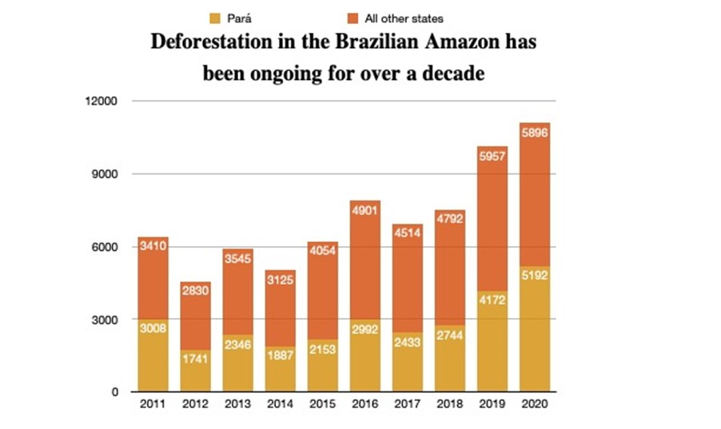

What Is Deforestation
Deforestation refers to the decrease in forest areas across the world that are lost for other uses such as agricultural croplands, urbanization, or mining activities. Greatly accelerated by human activities since 1960, deforestation has been negatively affecting natural ecosystems, biodiversity, and the climate. The UN’s Food and Agriculture Organization estimates the annual rate of deforestation to be around 1.3 million km2 per decade.
What causes deforestation?
Multiple factors, either of human or natural origin, cause deforestation. Natural factors include natural forest fires or parasite-caused diseases which can result in deforestation. Nevertheless, human activities are among the main causes of global deforestation. According to the Food and Agriculture Organization (FAO), the expansion of agriculture caused nearly 80% of global deforestation, with the construction of infrastructures such as roads or dams, together with mining activities and urbanization, making up the remaining causes of deforestation.
The Effects Of Deforestation In The Amazon Rainforest
Brazil and the Amazon forest are also important (for the wrong reasons) deforestation areas worldwide. The Amazon Rainforest is one of the world’s largest forest hotspots, with huge biodiversity reserves. Its ability to store carbon and produce oxygen makes it of the “lungs” of the planet.
Since the 1960s, the Amazon forest has been under threat, and nearly 760 000 km2 (around 20% of its original size) of forest area was lost. Before 1980-1990, large industrial projects such as dams, roads, or mines were the main causes of deforestation in the Amazon region, together with subsistence farming. However, for around thirty years, the causes of deforestation in the Amazon rainforest are changing. Why?
According to various reports on the subject (Greenpeace, FAO), livestock farming, including soya production, is responsible for about 70 to 80% of deforestation in the Amazon region. The development of intensive livestock production, combined with meat consumption increases in developed countries, is thus the main cause of deforestation in the Amazon forest.
The Effects Of Deforestation In Southeast Asia – Indonesia And Borneo
Indonesia and the island of Borneo are emblematic symbols of the global phenomenon of deforestation. This region in Southeast Asia is naturally one of the richest reserves of forest and biodiversity in the world. But at the same time, it is also one of the regions that have been suffering the most deforestation in recent decades. According to FAO, between 1990 and 2012 alone, Indonesia lost about 9 million hectares of its forests, largely due to deforestation caused by palm oil.
One of the most important causes of deforestation in Indonesia and Borneo is unquestionably the production of palm oil. According to FAO, between 1990 and 2000, nearly 6 million hectares of palm oil plantations have gradually replaced Indonesian forests. This makes the palm oil industry one of the biggest contributors to deforestation in Southeast Asia – and it is expected to continue to be so.
Due to pressure from NGOs (such as Greenpeace’s recent report) and new regulations, as well the expectations of consumers, the situation of the palm oil industry is slowly starting to improve. Certifications are starting to appear, including sustainable palm oil labels (that aim to prove it comes from certified forests and workers are fairly paid) like RSPO.
Indonesia now accounts for nearly 35% of the world’s sustainable palm oil production, although the sustainable palm oil market is still small (only 19% is certified). Despite industries still posing serious environmental problems, the media spotlight on this topic is beginning to shift the lines.
Deforestation In Africa
Africa is also a large area suffering from deforestation. In fact, it experiences more deforestation than Asia: about 2 million hectares of forest disappear each year in Africa. In Nigeria, for instance, over 90% of forests were lost because of practices that started in the colonial era. Woodcutting of forest reserves and the development of cocoa and palm oil plantations are among the main causes of deforestation in Africa, together with land cleaning for mining activities.
What Animals Are Affected By Deforestation?
Unconventional production practices that illegally take down trees and use dangerous chemicals threaten forests and wildlife. In this way, exploiting crops such as palm oil, wood, coffee or avocados has side effects that affect the environment and the surrounding ecosystems. It’s estimated that the Earth’s biodiversity is going extinct 0,1%, or aprox. 200 species per day, every year. Some of the animals under greatest threat are:
Article credit to youmatter.world ·
New data shows deforestation in the Brazilian Amazon at 12 year high
The twelve months leading up to July 2020 were the worst in over a decade for deforestation in the Brazilian Amazon. An estimated 11,000km² of primary forest was cleared between August 2019 and July 2020, the highest rate of clearance since 2008; in fact, 11,000km² is 14 times the size of New York City.
Deforestation increased by an estimated 9.5% over the previous year, according to new PRODES data released at the end of 2020. PRODES is a Brazilian government-run satellite monitoring project that detects signs of clear cutting in the Amazon.
The data also shows that the Amazon state of Pará is a major hotspot for deforestation, accounting for nearly half of the total by 2020. Furthermore, according to Global Forest Watch data, Pará had the second-largest area of forest cover of every Brazilian state in 2010, which helps to explain its role in the national deforestation rate.
Pará is also said to have the largest cattle herd in the Amazon, and it is a major source of live cattle exports in the region. Cattle ranching is a major cause of deforestation in the Amazon, accounting for an estimated 70% of cleared land use.
As a result, protecting and restoring tropical forests like the Amazon is widely regarded as a critical strategy for preventing climate disaster. Recent research, on the other hand, has highlighted the risk of the Amazon reaching a critical point because of fires and deforestation, causing the remaining intact forest to dry out and release billions of tonnes of carbon dioxide into the atmosphere. So, Global Witness is urging governments worldwide to require companies and financial institutions to address the risk of deforestation in their supply chains and financing to end their complicity in the destruction of the Amazon.
Article credit to Sam Leon ·
What can we stop deforestation?
Every product that is made out of trees is Recyclable. Practice recycling diligently. Your power as a consumer is vital to stopping deforestation. Just like any business, if there’s no demand then the supply will be lessened. Fortunately, there are environmentally and forest friendly businesses that are helping to stop deforestation. They need your support. Let’s encourage their efforts by patronizing their products.
You can contribute to the efforts against deforestation by doing these easy steps:
1. Plant a Tree where you can.
2. Go paperless at home and in the office.
3. Buy recycled products and then recycle them again.
4. Buy certified wood products. Read the labels and look for the FSC (Forest Stewardship Council) mark.
5. Support the products of companies that are committed to reducing deforestation. It’s all about business. If you don’t buy, they will be encouraged to improve their practices.
6. Raise awareness in your circle and in your community.
7. Buy only what you will use.
8. Don’t use Palm Oil or products with Palm Oil.
Article credit to TheWorldCounts ·